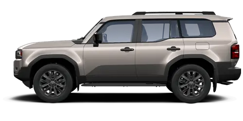

Land Cruiser 200
Мощь и элегантность в одном кадре.
Красота и мощь в каждом кадре
Коллекция изображений Toyota Land Cruiser — внедорожника, который покорил весь мир.
Мощь и элегантность в одном кадре.
Land Cruiser в своей естественной среде — на бездорожье. Легендарная проходимость в действии.
Классические пропорции внедорожника. Каждая линия говорит о надежности и премиальности.
Представленные изображения показывают Toyota Land Cruiser с различных ракурсов, демонстрируя его премиальный дизайн и внедорожные возможности.
"Land Cruiser — это не просто автомобиль. Это философия надежности, проверенная десятилетиями и миллионами километров."
— Toyota Motor Corporation